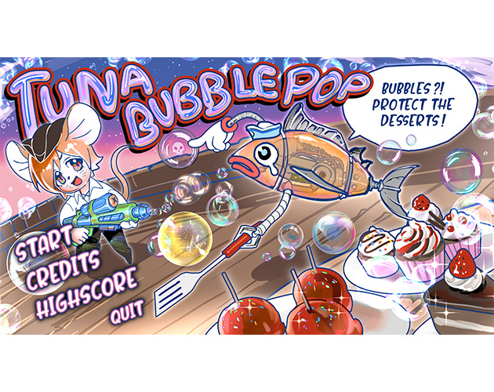
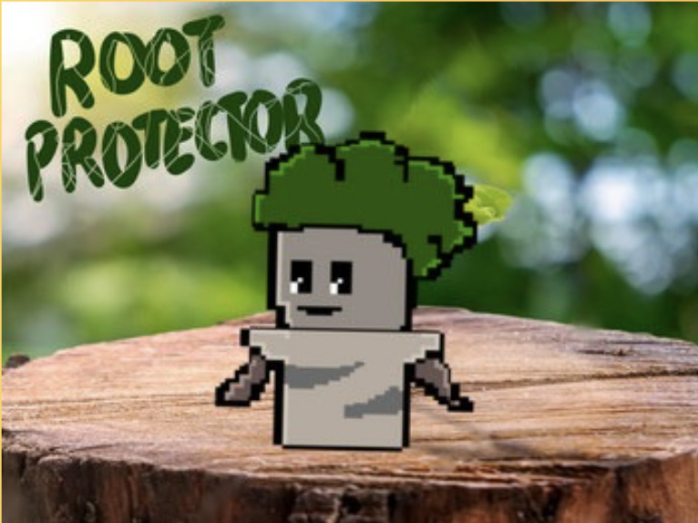
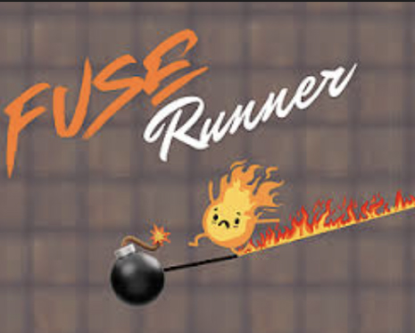
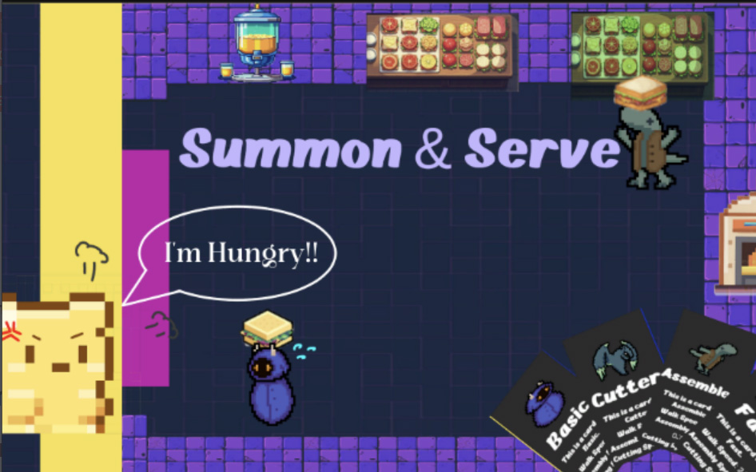

Contact
Email: virajbaxi.vb@gmail.com
Game Developer
Game Developer
Toronto, Canada
Unity • Unreal • Gameplay Systems • UI/UX Programming • Multiplayer Systems
View ProjectsI am a Game Developer based in Toronto, Canada, specializing in gameplay systems, multiplayer features, and interactive experiences using Unity and Unreal Engine.
Currently working as a Lead Game Developer at TortCo (USA-based studio) in a contract/volunteer capacity, where I lead development efforts, improve core gameplay systems, and collaborate across teams to deliver polished player experiences.
I graduated from Humber College (Toronto) in Game Programming and also hold a diploma in Computer Engineering from India. I bring a strong blend of technical problem-solving and creative thinking to every project.
Focused on building systems that feel great to play.
Contract / Volunteer • Remote • USA
Co-op horror experience with proximity voice chat, interaction systems, and multiplayer networking.
Multiplayer-focused midstone project developed in Unreal Engine, centered around cooperative gameplay systems and player interaction.

Arcade-style reflex game with scoring systems and hazards.

Game jam platformer focused on movement and responsive controls.

Fast-paced puzzle game centered around path planning and timing, developed during my volunteer experience at Astro Games.

A time-management strategy game where players summon monsters to prepare dishes in a fast-paced environment.
Advanced Diploma in Game Programming
Unity • Unreal Engine • C# • C++ • Multiplayer Systems • Gameplay Programming • UI/UX • Optimization • Graphics Programming (OpenGL, Vulkan)
Email: virajbaxi.vb@gmail.com